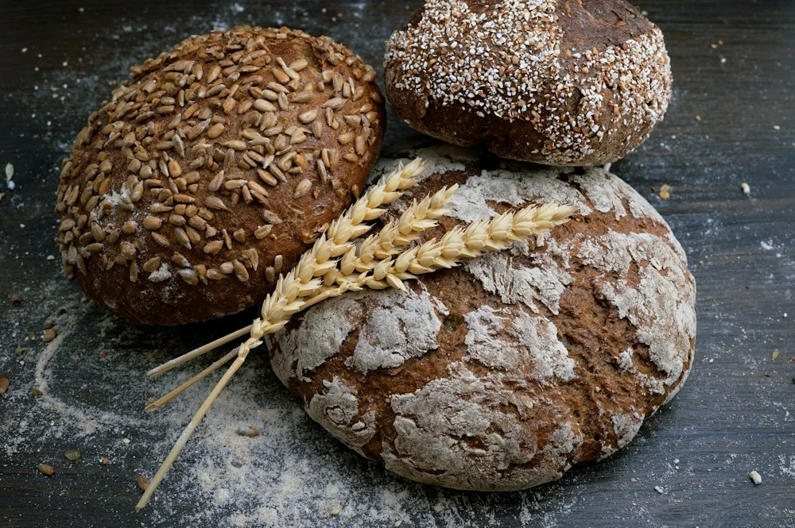

鴨のひととき徳島・鴨島CAFE & EVERYDAY
ABOUT THE PLACE
鴨島から、 パンの時間を。
吉野川市鴨島町のベイクショップ「鴨のひととき」。取材記事では、食パンやクロワッサンなどのパンが紹介されています。
公開情報に基づく紹介です。紹介の出典

A LITTLE DISCOVERY
パンを選ぶ、小さな楽しみ。
公開記事で紹介されている内容から、お店を知る小さな手がかりを。
食パン
取材記事で紹介されているパンのひとつです。
クロワッサン
記事掲載のパン。焼き上がりや販売内容はお店の最新案内をご確認ください。
カレーパン・クリームパン
こちらも取材記事に掲載されています。現在の販売を保証するものではありません。
掲載内容は出典の掲載時点の情報です。現在の提供内容・価格・営業状況を保証するものではありません。
TAKE A MOMENT
日々の途中に、 ひと息の時間を。
ご来店前には、最新の案内をご確認ください。
- 所在地
- 徳島県吉野川市鴨島町鴨島329-1
- 営業時間
- 最新の営業日・営業時間は、お店の案内をご確認ください。
地図は店名・住所の検索リンクです。正確な入口や臨時休業などは、訪問前にご確認ください。